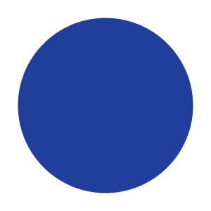

<!DOCTYPE html>
<html>
  <head>
    <title>My experiment</title>
    
    <!-- JsPsych PLUGINS -->
    <script src="jspsych/jspsych.js"></script>
    <script src="jspsych/plugin-html-keyboard-response.js"></script>
    <script src="jspsych/plugin-html-button-response.js"></script>
    <script src="jspsych/plugin-image-keyboard-response.js"></script>
    <script src="jspsych/plugin-preload.js"></script>

    <!-- STYLESHEET-->
    <link href="jspsych/jspsych.css" rel="stylesheet" type="text/css" />
  </head>
  <body></body>
  <script>
    // Local Download
    function download(data, filename, type) {
        var file = new Blob([data], {type: type});
        if (window.navigator.msSaveOrOpenBlob) // IE10+
            window.navigator.msSaveOrOpenBlob(file, filename);
        else { // Others
            var a = document.createElement("a"),
                    url = URL.createObjectURL(file);
            a.href = url;
            a.download = filename;
            a.hidden = true;
            document.body.appendChild(a);
            a.click();
            setTimeout(function() {
                document.body.removeChild(a);
                window.URL.revokeObjectURL(url);  
            }, 0); 
        }
    };
    function upload_to_server(data, filename, type) {
        var file = new Blob([data], {type: type});
        var output = new FormData();
        output.append(filename, myBlob);
        fetch("3b-blob-upload.php", {
            method: "POST",
            body: output
        })
        .then((res) => { return res.text(); })
        .then((txt) => { console.log(txt); });
    }
    // INIT JSPSYCH
    const jsPsych = initJsPsych({
        on_finish: function() {
            //download(jsPsych.data.get().csv(),'testData.csv','text');
            upload_to_server(jsPsych.data.get().csv(),'testData.csv','text');
            jsPsych.data.displayData();
        }
    });
    var timeline = [];

    // DEFINE TRIALS
    const preload = {type: jsPsychPreload, images: ['img/blue.png','img/orange.png','img/face_blue.jpg','img/face_orange.jpg']};
    timeline.push(preload);

    const intro_trial = {
        type: jsPsychHtmlButtonResponse,//see docs for plugin details
        stimulus: '<p style="color:blue"> <b>Hi Kyle :)</b> </p> <br><br>',
        choices: ['Press this button to start the experiment']
    };
    timeline.push(intro_trial);

    const instructions_trial = {
        type: jsPsychHtmlKeyboardResponse,
        stimulus: `
                    <p>In this experiment, a circle will appear in the center 
                    of the screen.</p><p>If the circle is <strong style="color:blue">blue</strong>, 
                    press the letter <strong  style="color:blue">F</strong> on the keyboard as fast as you can.</p>
                    <p>If the circle is <strong style="color:orange">orange</strong>, press the letter <strong style="color:orange">J</strong> 
                    as fast as you can.</p>
                    <div style='width: 700px;'>
                    <div style='float: left;'></img>
                    <p class='small'><strong>Press the F key</strong></p></div>
                    <div style='float: right;'></img>
                    <p class='small'><strong>Press the J key</strong></p></div>
                    </div>
                    <p><br><br><b>Press any key to begin.</b></p>
                `
    };
    timeline.push(instructions_trial);

    const blue_trial = {
        type: jsPsychImageKeyboardResponse,
        stimulus: 'img/blue.png',
        choices: ['f', 'j']
    };
    const orange_trial = {
        type: jsPsychImageKeyboardResponse,
        stimulus: 'img/orange.png',
        choices: ['f', 'j']
    };
    const craig_blue_trial = {
        type: jsPsychImageKeyboardResponse,
        stimulus: 'img/face_blue.jpg',
        choices: ['f', 'j']
    };
    const craig_orange_trial = {
        type: jsPsychImageKeyboardResponse,
        stimulus: 'img/face_orange.jpg',
        choices: ['f', 'j']
    };
    var fixation = {
        type: jsPsychHtmlKeyboardResponse,
        stimulus: '<div style="font-size:60px;">+</div>',
        choices: "NO_KEYS",
        trial_duration: function(){
            return jsPsych.randomization.sampleWithoutReplacement([250, 500, 750, 1000, 1250, 1500, 1750, 2000], 1)[0];
        },
        data: {
            task: 'fixation'
        }
    };

    var test_stimuli = [
        { stimulus: "img/blue.png", correct_response: 'f'},
        { stimulus: "img/orange.png", correct_response: 'j'}
    ];
    var craig_stimuli = [
        { stimulus: "img/face_blue.jpg", correct_response: 'f'},
        { stimulus: "img/face_orange.jpg", correct_response: 'j'}
    ];

    var test = {
        type: jsPsychImageKeyboardResponse,
        stimulus: jsPsych.timelineVariable('stimulus'),
        choices: ['f', 'j'],
        data: {
            task: 'response',
            image_type: 'circle',
            correct_response: jsPsych.timelineVariable('correct_response')
        },
        on_finish: function(data){
            data.correct = jsPsych.pluginAPI.compareKeys(data.response, data.correct_response);
        }
    };
    var test_procedure = {
        timeline: [fixation, test],
        timeline_variables: test_stimuli,
        randomize_order: true,
        repetitions: 6
    };
    var craig = {
        type: jsPsychImageKeyboardResponse,
        stimulus: jsPsych.timelineVariable('stimulus'),
        choices: ['f', 'j'],
        data: {
            task: 'response',
            image_type: 'face',
            correct_response: jsPsych.timelineVariable('correct_response')
        },
        on_finish: function(data){
            data.correct = jsPsych.pluginAPI.compareKeys(data.response, data.correct_response);
        }
    };
    var craig_procedure = {
        timeline: [fixation, craig],
        timeline_variables: craig_stimuli,
        randomize_order: true,
        repetitions: 2
    };
    
    timeline.push(test_procedure);
    timeline.push(craig_procedure);


    var debrief_block = {
        type: jsPsychHtmlKeyboardResponse,
        stimulus: function() {
            var trials = jsPsych.data.get().filter({task: 'response'});
            var correct_trials = trials.filter({correct: true});
            var accuracy = Math.round(correct_trials.count() / trials.count() * 100);
            var rt = Math.round(correct_trials.select('rt').mean());

            return `<p>You responded correctly on ${accuracy}% of the trials.</p>
            <p>Your average response time was ${rt}ms.</p>
            <p>Press any key to complete the experiment. Thank you!</p>`;
        }
    };
    timeline.push(debrief_block);


    // TIMELINE
    jsPsych.run(timeline);
  </script>
  
</html>
